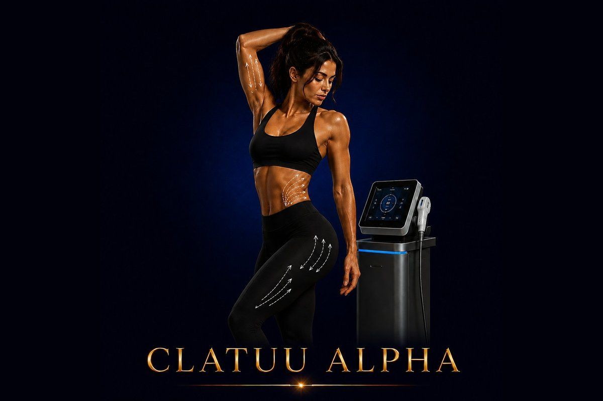

Body Shaping
Advanced 360° cryolipolysis — fat freezing for stubborn pockets, with no needles, no surgery, and no downtime.
✓ Full medical content — verified for SEO and patient information.

About
Clatuu Alpha is an advanced cryolipolysis device — a non-surgical body contouring technology that uses controlled cooling to freeze and permanently destroy fat cells beneath the skin. It's the newest generation of the Clatuu family, built around 360° dual cooling applicators that surround the fat pocket from all sides, providing more uniform and efficient fat reduction than older single-direction cryolipolysis devices. The science behind it is simple: fat cells are more sensitive to cold than the skin, blood vessels, or nerves around them. By cooling targeted fat to a specific therapeutic temperature, the treated fat cells crystallize and undergo natural cell death (apoptosis). Over the following weeks, the body's lymphatic system gradually clears these dead fat cells out — and they're gone permanently. Clatuu Alpha is widely considered one of the most effective non-invasive fat reduction technologies on the market, alongside CoolSculpting, and is FDA-cleared and CE-certified. It's ideal for patients who want real fat reduction without surgery, needles, or downtime.
Why It Works
The Process
70 minutes per treatment area, with two areas often treatable simultaneously: 1
Consultation & area selection Your doctor identifies which fat pockets are good candidates for cryolipolysis (the fat must be pinchable and within the suitable size range), marks the treatment area, and selects the appropriate applicator size. 2
Protective gel pad A gel pad is placed over the skin to protect it from extreme cold during treatment. 3
Applicator placement The Clatuu Alpha applicator is placed on the target area
The device uses suction to draw the fat pocket into the cooling chamber, then surrounds it with 360° controlled cooling. 4
10 minutes, you may feel intense cold and pulling — this fades quickly as the area becomes numb
You can relax, read, or use your phone for the remainder of the session. 5
Post-treatment massage After the applicator is removed, the doctor performs a 2-minute massage on the treated area
This step has been shown to significantly improve the final fat reduction outcome
12 weeks as the body clears destroyed fat cells
12 weeks for additional reduction
Who It's For
Safety First
Quality You Can Trust
Treatment Comparisons
Both are FDA-cleared cryolipolysis platforms. CoolSculpting (Allergan) was the first mainstream device. Clatuu Alpha is the newer generation, with 360° cooling instead of one-direction cooling, which gives more uniform results across the treatment area. In our clinical experience, both deliver excellent fat reduction outcomes.
Body FX is non-invasive RF (heat-based) that combines fat reduction, cellulite improvement, and skin tightening in one device. Clatuu Alpha uses cold instead of heat, and focuses on fat reduction — it doesn't tighten skin. For patients with fat AND mild skin laxity, Body FX may be a more complete option; for pure fat reduction, Clatuu Alpha is often more effective per session.
BodyTite is a minimally invasive procedure with a tiny incision and local anesthesia — it removes fat AND tightens skin much more aggressively than non-invasive options. Clatuu Alpha is fully non-invasive, painless, no downtime, but less aggressive. The choice depends on how much fat you need to reduce and whether skin tightening is also a goal.
Tesla Former and similar electromagnetic devices stimulate muscle contractions to build muscle and reduce fat — they're better for muscle definition (abs, glutes). Clatuu Alpha is purely fat reduction. Many patients combine the two for body sculpting: Clatuu Alpha to reduce fat, then Tesla Former to build the muscle underneath.
Cavitation uses ultrasound waves to disrupt fat cells. It produces gentler, more modest fat reduction than cryolipolysis. Clatuu Alpha is significantly more effective per session, with published clinical data supporting permanent fat-cell destruction.
Fat-dissolving injections (Aqualyx, Lemon Bottle, deoxycholic acid) work well in small specific areas like the double chin. Clatuu Alpha is more efficient for larger areas like the abdomen or thighs. Both can be combined in a comprehensive plan.
Investment
Clatuu Alpha
The price of a Clatuu Alpha session at Hollywood Clinic is set after a free consultation and depends on: Number of areas treated — single area vs. multiple areas in one session.
Final pricing is determined after a free consultation, because every case is different.
Book Free ConsultationWhy Hollywood Clinic
Dr. Sara Abdelhameed — Clinical Nutrition Consultant & Body Contouring Specialist. 12+ years of experience, 50,000+ women treated. Ideal for designing Clatuu Alpha protocols integrated into a complete body-shaping and nutrition plan
Dr. Rana Ibrahim Sultan — Clinical Nutritionist & Non-Invasive Aesthetic Specialist. Expert in combination protocols using cryolipolysis alongside other body sculpting technologies
Dr. Ehssan Rabie — Clinical Nutrition Specialist with 13 years at Kasr Al-Ainy. Strong fit for patients who want their Clatuu Alpha sessions backed by serious clinical nutrition guidance for long-term results
FAQ